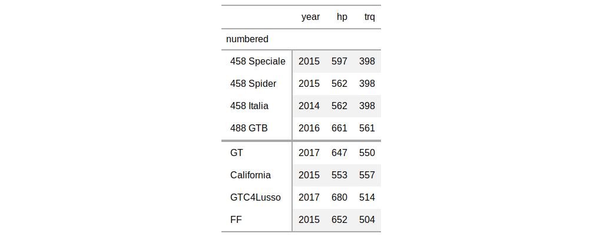
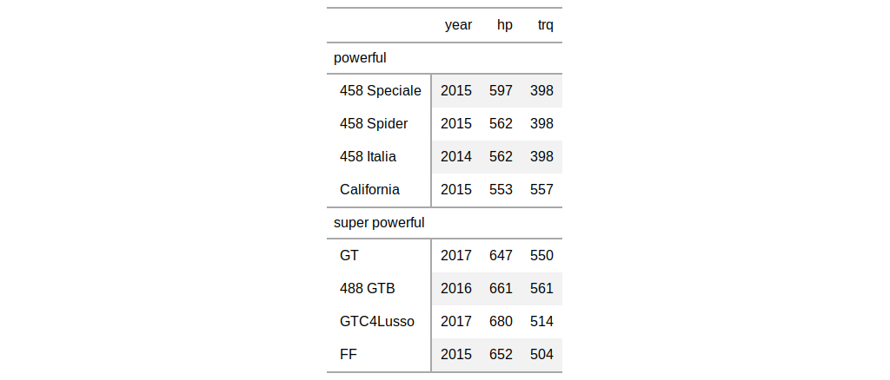

| tab_row_group {gt} | R Documentation |
Create a row group with a collection of rows. This requires specification of
the rows to be included, either by supplying row labels, row indices, or
through use of a select helper function like starts_with().
tab_row_group(data, group = NULL, rows = NULL, others = NULL)
data |
a table object that is created using the |
group |
the name of the row group. This text will also serve as the row group label. |
rows |
the rows to be made components of the row group. Can either be a
vector of row captions provided |
others |
an option to set a default row group label for any rows not
formally placed in a row group named by |
an object of class gt_tbl.


Other table-part creation/modification functions: gt_preview,
gt, tab_footnote,
tab_header, tab_options,
tab_source_note, tab_spanner,
tab_stubhead_label, tab_style
# Use `gtcars` to create a gt table and
# add two row groups with the labels:
# `numbered` and `NA` (a group without
# a title, or, the rest)
tab_1 <-
gtcars %>%
dplyr::select(model, year, hp, trq) %>%
dplyr::slice(1:8) %>%
gt(rowname_col = "model") %>%
tab_row_group(
group = "numbered",
rows = matches("^[0-9]")
)
# Use `gtcars` to create a gt table;
# add two row groups with the labels
# `powerful` and `super powerful`: the
# distinction being `hp` lesser or
# greater than `600`
tab_2 <-
gtcars %>%
dplyr::select(model, year, hp, trq) %>%
dplyr::slice(1:8) %>%
gt(rowname_col = "model") %>%
tab_row_group(
group = "powerful",
rows = hp <= 600
) %>%
tab_row_group(
group = "super powerful",
rows = hp > 600
)